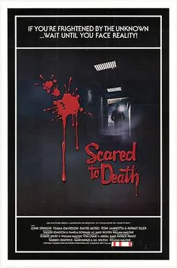

The genetics
Genetics supplies the monster. The Syngenor's name stands for "SYNthesized GENetic ORganism": a creature built in Amberdine Research labs by Dr. Ed Amberdine, who worked alone and whose notes warned that it would be dangerous if it reached maturity. After his death nobody monitored it, and it escaped into the sewers, killing people and reproducing asexually. The film says nothing about why Amberdine made it; as the Moria review puts it, the genetic experiment run amok is a nominal justification for an Alien-style creature brought down to contemporary Earth. Sherry, a research assistant from the lab, is sympathetic and helps destroy the creature. The creature and its biology are pure fiction; the film uses genetic engineering only as a plausible-sounding origin for a monster.
How genetics is portrayed
- Overall portrayal of genetics
- negative Genetic engineering is the source of a killer monster, an experiment run amok, and the film ends on the grim note of Jennifer's madness.
- Outcome of the genetic intervention
- negative The unmonitored Syngenor escapes, kills many people, breeds in the sewers using human hosts and leaves Jennifer insane before it is destroyed.
- Dr. Ed Amberdine
- neutral Aim: not stated (not applicable). Amberdine created the Syngenor alone at Amberdine Research labs and died before the story; the film gives no aim and no judgement of him, only his notes warning of the danger.
The story
A string of murders baffles the Los Angeles police: the victims are drained of spinal fluid by a killer of superhuman strength who leaves no witnesses or fingerprints. Ted Lonergan, a former detective, refuses his old partner Lou Capell's requests for help while he courts Jennifer Stanton, until Jennifer is attacked and left in a coma. Sherry Carpenter, who worked at a research laboratory, tells Ted that the killer is a Syngenor, a creature made by the late Dr. Ed Amberdine and left unsupervised after his death. While the police chief closes the case by blaming a dead suspect, Ted and Sherry follow the creature into the sewers, where they find humans kept alive to feed its asexually produced offspring. Ted destroys the embryos, and the adult Syngenor is finally crushed in a drop forge. Jennifer wakes from her coma, but insane.